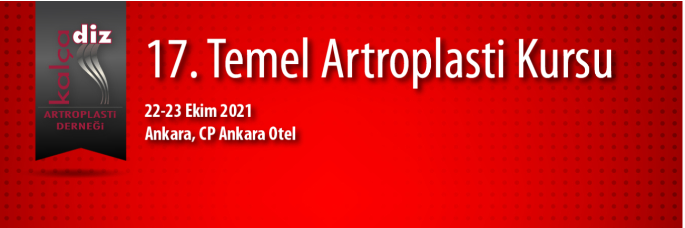

Değerli Meslektaşlarım,
Kalça Diz Artroplasti Derneği tarafından 22-23 Ekim 2021 tarihleri arasında CP Ankara Otel’de 17. Temel Kalça Diz Artroplasti Kursu düzenlenecektir.
Özellikle kıdemli asistanlarımız ile genç uzmanlarımıza yönelik olan kursun artroplastide temel teorik bilgilerin yanısıra kuru kemikler üzerinde pratik artroplasti uygulamalarıyla bilgi ve becerilerin güncellenmesi ve konusunda deneyimli eğitici ekibiyle tartışılması amaçlanmaktadır.
İki gün sürecek olan kursumuzda; güncellenmiş, daha interaktif bir program ile sizleri de aramızda görmek istiyoruz. Kursun başarıya ulaşması sizin de destek ve katkılarınızla mümkün olacaktır.
Kayıt için Tıklayınız,
Program için Tıklayınız,
17. Temel Artroplasti Kursunda buluşmak üzere....
Prof. Dr. Ömür Çağlar Kurs Başkanı
Prof. Dr. E. Ertuğrul Şener Dernek Başkanı
